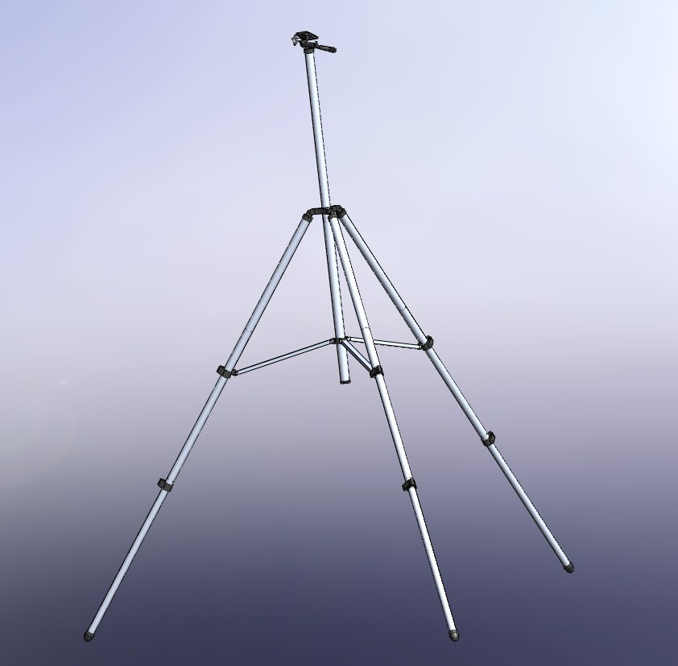

Ideas made
tangible.
I'm Mitchell Endicott, an engineering student at Whitworth University. I enjoy working across the line between digital design and physical builds—from aircraft and embedded systems to software and hands-on construction.
Seeking a summer 2027 engineering internship.

Projects & builds.
3D-printed
RC aircraft
A group project focused on designing, building, and testing a 3D-printed RC aircraft.
I designed and modeled the fuselage and nose in SolidWorks, contributed to the full aircraft assembly, and helped test the electrical propulsion system. The finished aircraft did not take off during testing. Looking back at the design, I would make the funnel through the fuselage more gradual, as the steep transition likely created excessive back pressure.
My contribution
Fuselage and nose modeling, aircraft assembly, and propulsion-system testing.
Tools & materials
SolidWorks, LoggerPro, 3D printing, PLA and PLA Aero. The airplane is about 2 ft by 2 ft.
Completed aircraftSprint timing
gate
A portable sprint timing system combining infrared beam-break sensing, wireless communication, firmware, and a phone interface.
The project brings hardware and software together: the timing gate electronics and firmware handle the measurement, while an app provides the user-facing controls and results. I've also modeled a tripod stand in SolidWorks and am working through the enclosure and mounting design. The first prototype will use a breadboard before moving to a perfboard build.
Status
In progress. The firmware and phone app are written and tested in simulation on a laptop. The hardware has not been built yet.
Current work
Firmware and app development, tripod and housing design, and planning the transition from breadboard to perfboard.
Tools & technologies
C++, ESP32-C3, Bluetooth LE, Web Bluetooth, and SolidWorks.

Tripod concept / deployedEmbedded
systems
A collection of embedded C projects built around the Nordic nRF52840 development kit and Zephyr RTOS.
These projects explore how firmware interacts with physical components: reading sensors, handling digital inputs and outputs, communicating over hardware interfaces, and controlling displays and indicators. The work has involved integrating components and debugging both code and circuit connections.
Areas explored
GPIO, PWM, ADC, I²C, SPI, sensor integration, display control, and event-driven behavior.
Tools & platform
C, nRF52840 DK, Zephyr RTOS, and common electronic sensors and modules.
 Hardware prototype
Hardware prototypeSmartTrack
A C++ program that generates customized weekly track and field training plans.
The program takes an athlete's availability, events, goals, and personal records into account when building a weekly plan. It was developed as a CS171 final project and brings together input handling, arrays, scheduling logic, and program structure in a practical application.
Core functionality
Generates weekly plans based on athlete inputs and supports a weekly check-in to reschedule missed workouts.
Tools
C++.
What I'd improve next
Future developmentA dedicated user interface
Replace the terminal-based experience with a clear interface for entering athlete information, building a weekly plan, and reviewing or adjusting workouts.
A larger, more specific drill library
Replace generic labels like “discus drills” with actual exercises, sets, reps, and useful coaching cues. Build a deeper pool of options for each event.
More targeted workout selection
Select drills around the athlete's event, experience, goals, and development needs, rather than relying on broad event categories.
Progression across weeks
Make plans build on previous training, with purposeful changes in volume and intensity instead of treating every generated week as a standalone schedule.
Better workload and recovery logic
Account for workout intensity and overlapping demands so hard sprint sessions, lifting, and event work are balanced with appropriate recovery.
A more complete athlete profile
Include training experience, available equipment, and workout feedback. Use completed sessions and athlete input to make future plans more relevant.
01 / AVAILABILITY
02 / EVENTS & GOALS
03 / PERSONAL RECORDS
↓
WEEKLY TRAINING PLAN
What events would you like to work on? (Select up to 4) Enter the number of an event to select it. Enter 0 when done. 1. 60m 2. 100m 3. 200m 4. 400m 5. 800m 6. 1500m 7. 3000m 8. 60mh 9. 100/110mh 10. 400mh 11. Long Jump 12. High Jump 13. Triple Jump 14. Pole Vault 15. Shot Put 16. Discus 17. Javelin Choose event #1 (0 to finish): 2 Added: 100m Choose event #2 (0 to finish): 15 Added: Shot Put Choose event #3 (0 to finish): 16 Added: Discus Choose event #4 (0 to finish): 14 Added: Pole Vault What are your training goals? (Select up to 2) Enter the number of a goal to select it. Enter 0 when done. 1. Acceleration/Start 2. Speed 3. Speed Endurance 4. Power 5. Technique 6. Strength Choose goal #1 (0 to finish): 1 Added: Acceleration/Start Choose goal #2 (0 to finish): 2 Added: Speed What are your PR's in your events? (In MM:SS.SS or meters) 1. 100m: 11.51 2. Shot Put: 15.80 3. Discus: 48.00 4. Pole Vault: 4.10 What are your PR's in the gym? (In pounds) Back Squat: 405 Bench Press: 275 Deadlift: 435 Clean: 295 Enter your availability for each day. Monday available (Y/N)? y Start time: 10:10 End time: 12:00 Add another availability window for Monday? y Start time: 15:00 End time: 17:00 Add another availability window for Monday? n Tuesday available (Y/N)? y Start time: 9:30 End time: 12:00 Add another availability window for Tuesday? n Wednesday available (Y/N)? y Start time: 10:10 End time: 12:00 Add another availability window for Wednesday? y Start time: 15:00 End time: 17:00 Add another availability window for Wednesday? n Thursday available (Y/N)? y Start time: 9:30 End time: 12:00 Add another availability window for Thursday? n Friday available (Y/N)? n Saturday available (Y/N)? n Sunday available (Y/N)? n === Weekly Workout Plan === Day: Monday Window 1 (10:10 - 12:00): Track: 100m (4x15m kneeling starts) Window 2 (15:00 - 17:00): Track: Shot Put (Standing throws x3-6, Glide/Rotational drills 3x5, emphasis on footwork) Day: Tuesday Window 1 (09:30 - 12:00): Gym: Back Squat @ 121.5 lbs, 3 sets x 5 reps Accessory 1: Hip Thrust - 3 sets x 10-15 reps Accessory 2: Step-ups - 3 sets x 10-15 reps Day: Wednesday Window 1 (10:10 - 12:00): Track: Discus (Standing throws x3-6, Rotational drills 3x5, emphasis on footwork) Window 2 (15:00 - 17:00): Track: Pole Vault (4x80 sprints, build up the first 25m @ 90%) Day: Thursday Window 1 (09:30 - 12:00): Rest day === Weekly Workout Check-In === Did you complete all your workouts this week? (Y/N): y
Construction &
woodworking
Hands-on experience building and finishing real projects, from residential construction to custom woodworking.
I've worked alongside my dad on residential construction and woodworking projects, including houses, sheds, wardrobes, cabinets, and bed frames. That work has built practical familiarity with measuring and layout, framing, cabinetry, flooring, drywall, and finishing.
Experience
Residential construction, framing, woodworking, cabinetry, and interior finish work.
Why it matters
Working with materials and physical constraints has shaped how I approach design, fit, build sequence, and practical problem-solving.
Photos
Listing photos of finished homes I worked on.
 Residential construction
Residential constructionAcross disciplines, with a practical mindset.
I like understanding how the pieces of a system fit together—mechanical, electrical, and software—and then getting hands-on with the details.
Mechanical design
SolidWorks · Part and assembly modeling · Design iteration · 3D printing · Prototyping
Embedded systems
C · C++ · Zephyr RTOS · nRF52840 · ESP32-C3 · GPIO · PWM · ADC · I²C · SPI · Bluetooth LE
Software
C++ programming · Input validation · Scheduling logic · Application development
Hands-on fabrication
Framing · Cabinetry · Flooring · Drywall · Measuring and layout · Power tools
Engineering that connects the model to the real world.
I'm pursuing a Bachelor of Science in Engineering with a mechanical focus at Whitworth University. Working on residential construction and woodworking projects taught me to think about materials, measurements, fit, and build sequence in a practical way.
That hands-on perspective carries into my engineering work: sketching and modeling parts, writing firmware for real hardware, and iterating when a design doesn't behave as expected.